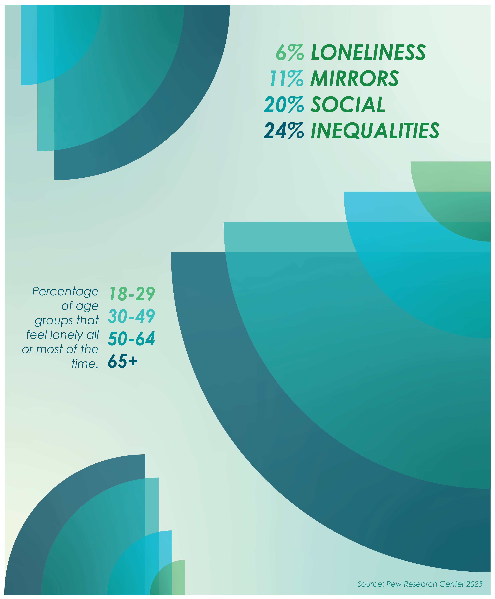
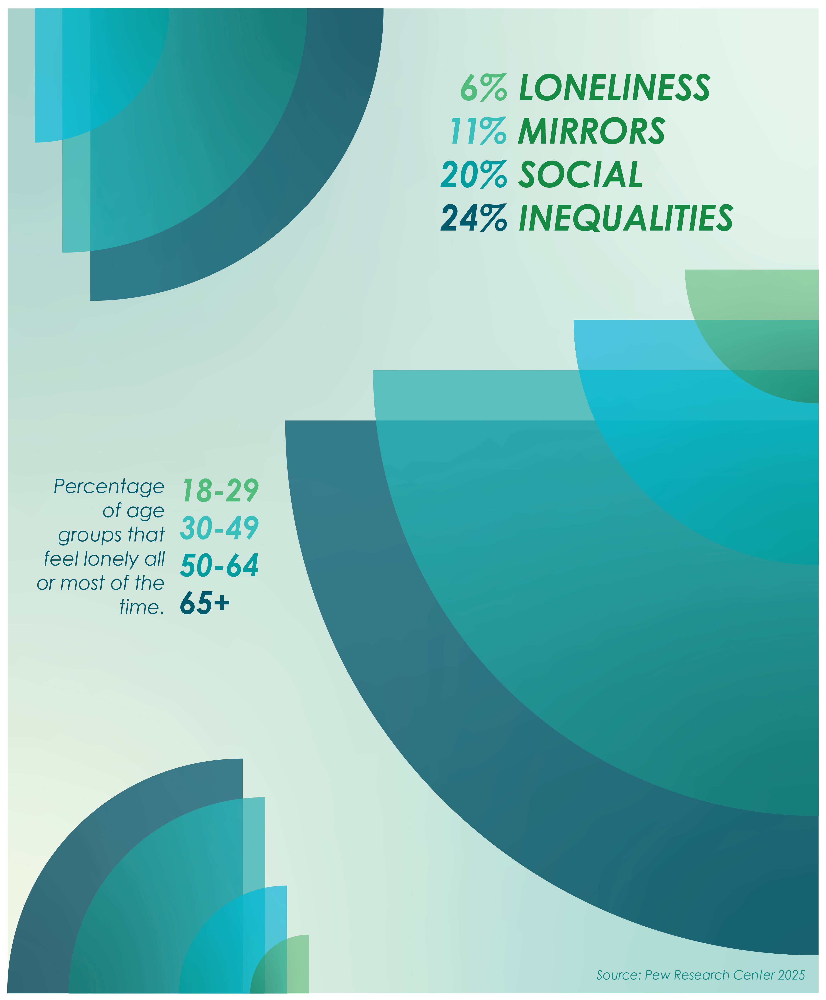
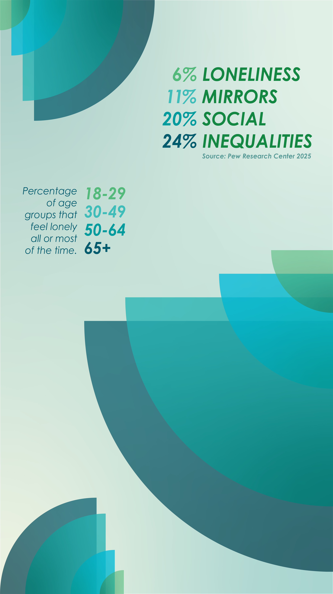
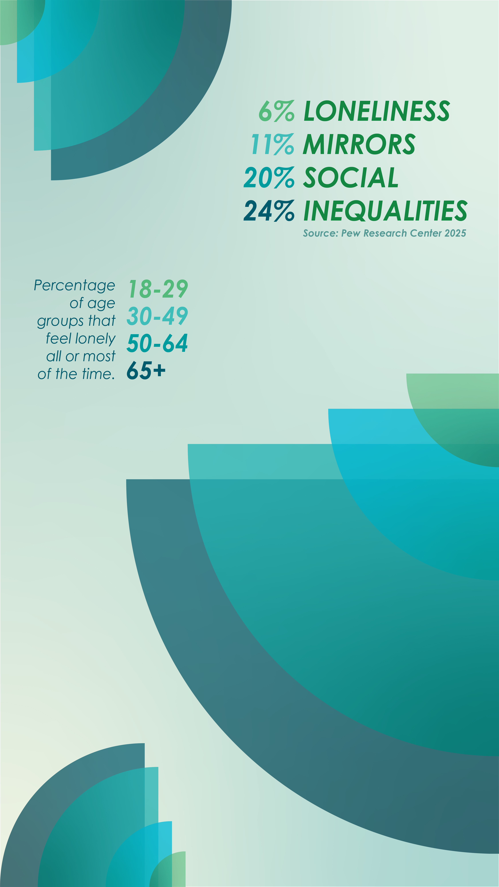
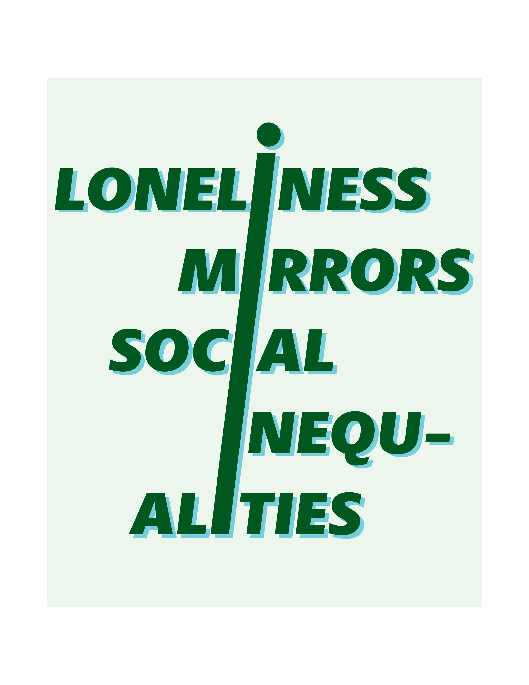
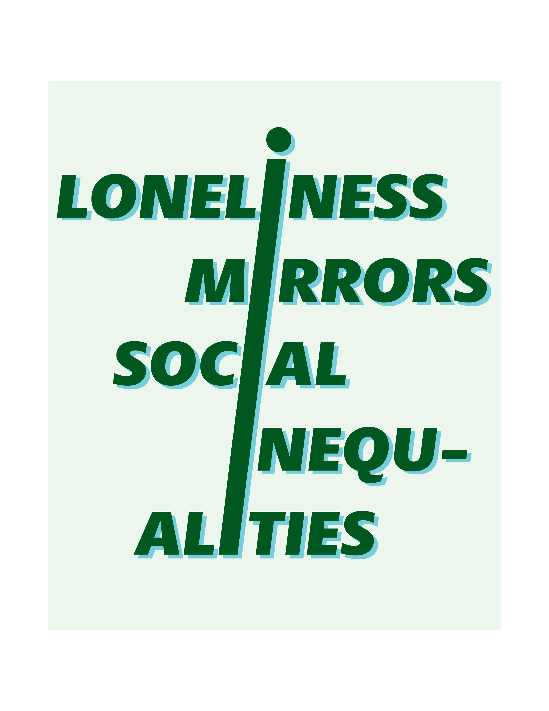
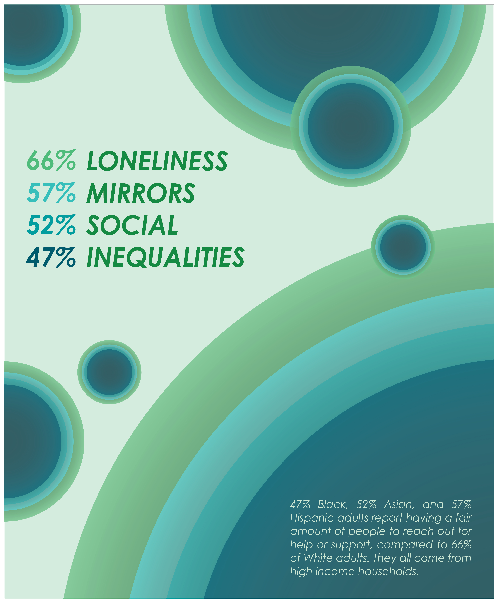
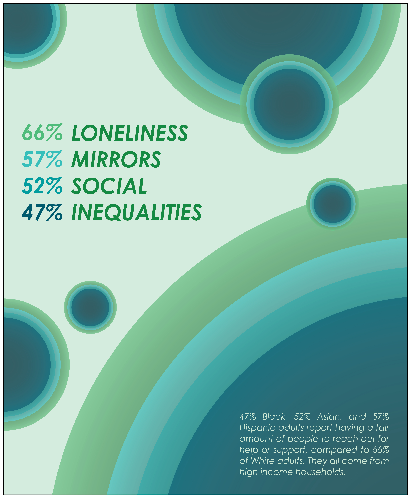

Loneliness Mirrors Social Inequalities
Posters

 

Story Posts

 

A Social Poster and Social Media Campaign
This project was created to bring social awareness on loneliness through visuals. This campaign includes three posters and their corresponding social media posts.
Tool Used
- Adobe Illustrator
Project Timeline
Week 1 & 2: Concept & Early Ideations
Sketched multiple iterations and developed the color palette and typography style for two campaigns. Built initial digital drafts in Adobe Illustrator.
Week 3: Prototyping
Tested various layout compositions to ensure the hierarchy of information was clear for both print and adapted digital social media formats.
Week 4: Final Designs
Polished the final three posters and social media posts. Ensured to correct spacing and content for better interpretation.
Early Campaign Ideations
 



Prototyping
 
